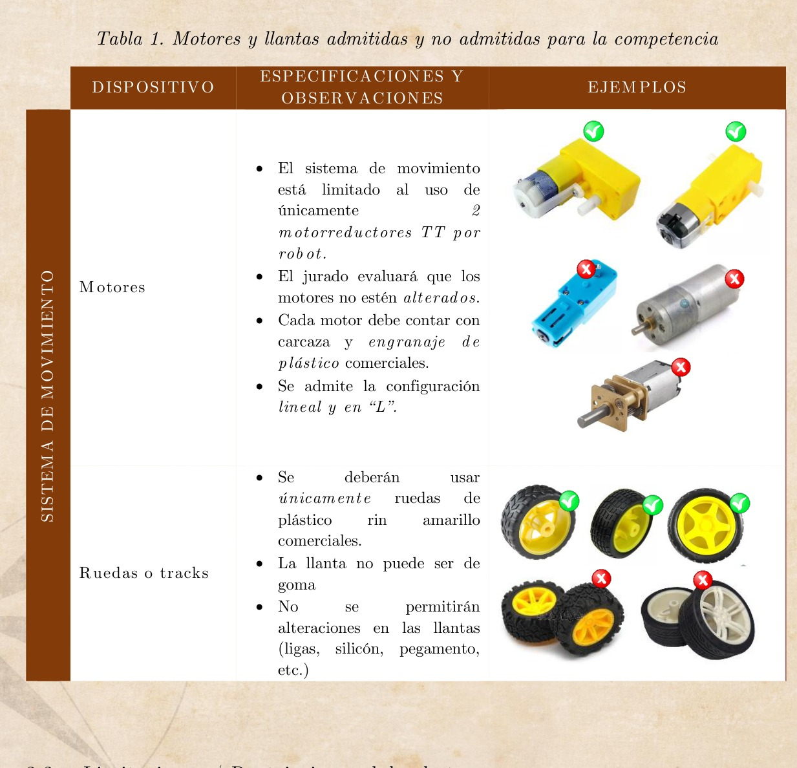
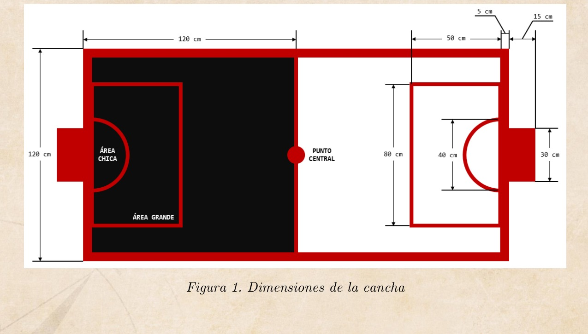
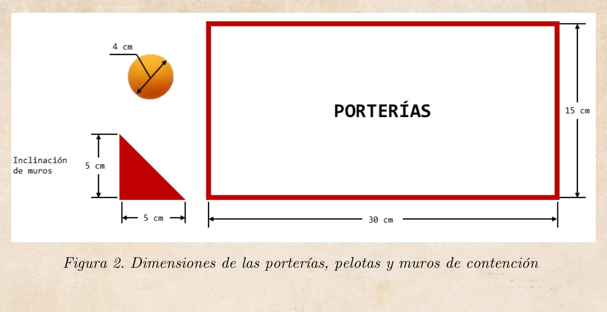
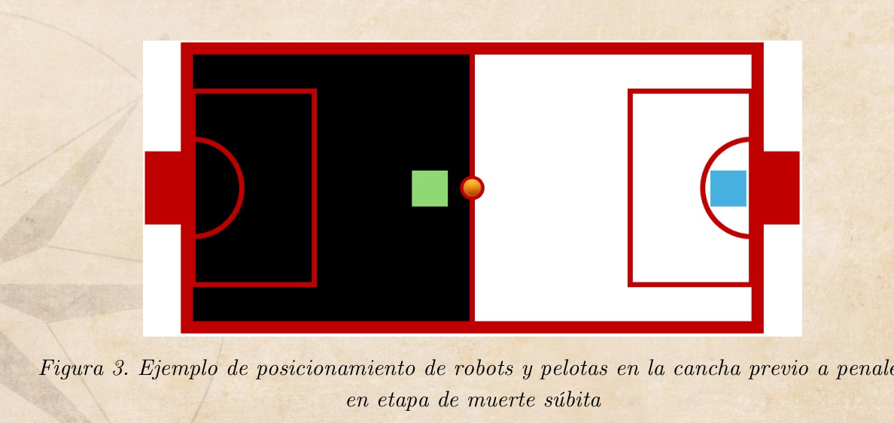
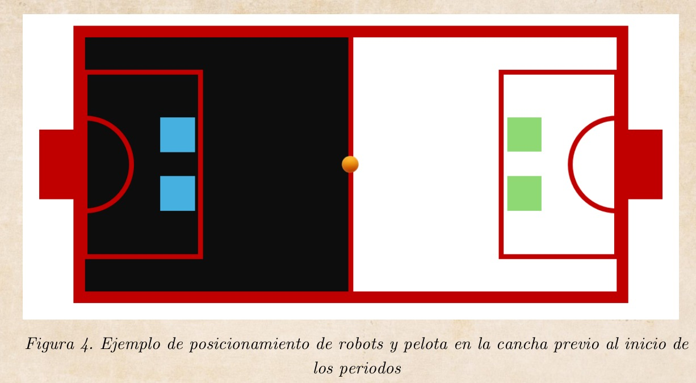

FUTBOL SUMO
CATEGORÍA SEMI-PRO | 2026
CAMBIOS Y ACTUALIZACIONES
CATEGORÍA: Reglamento | FutBol Sumo (Semi-Pro) | 2026
[20/FEBRERO/2026] Publicacion de manuales
DESCARGAR PDF
El concurso está dirigido a estudiantes de educación media y superior que compartan la pasión por la robótica. Para participar, cada equipo debe contar con mínimo 2 integrantes y máximo 4, y apegarse a las reglas del Fut-Bol Sumo Semi-Pro, tanto en las dimensiones de la superficie de juego como en las pautas de despliegue y compromiso. Asimismo, los robots deben ajustarse a los siguientes requisitos de construcción: un peso máximo de 600g y medidas de 13 × 13 cm (sin límite de altura).
En cada encuentro se enfrentan dos equipos, cada uno con dos robots construidos de acuerdo con los lineamientos de este reglamento. El partido comienza cuando el árbitro da la señal y termina al concluir dos periodos de 2 minutos de tiempo reglamentario.
2.1. Especificaciones Generales del Robot
- A. La tracción debe realizarse únicamente con 2 motores TT amarillos y llantas estándar con rin amarillo de plástico. No se permiten otros motores/ruedas en esta categoría. (ver tabla 1.)
- B. El robot debe ser controlado por cualquier tipo de comunicación inalámbrica siempre y cuando no sea susceptible a interferencia de señales que afecten el funcionamiento propio o del rival. Se admitirá cualquier diseño que no infrinja las limitaciones establecidas en el capítulo 2.2. El equipo responsable de la construcción puede elegir cualquier material y cualquier mecanismo de control.
- C. Dimensiones máximas, el robot debe mantenerse dentro de estas dimensiones en todo momento, no se permite extender ni desplegar elementos que sobresalgan:
- Longitud: 13 cm
- Anchura: 13 cm
- Masa máxima: 600g
- Sin límite de altura.
- D. Movimiento en el campo:
- En caso de que el robot pierda movilidad, ya sea por contacto con el oponente o por su propia maniobrabilidad, el operador no podrá intervenir hasta que finalice el período.
- E. Inmovilidad previa al inicio:
- Antes de que empiece el partido, los robots deben permanecer completamente quietos en el límite del “área grande” de portería.
- F. Número identificativo:
- Cada robot deberá exhibir visiblemente un número, proporcionado por la organización, en el exterior de su chasis.
- Este número sirve para que el árbitro identifique al robot y aparecerá en la carpeta del equipo.

Tabla 1. Motores y llantas admitidas y no admitidas para la competencia
2.2. Limitaciones / Restricciones del robot
Para asegurar una competencia más equitativa, el uso de ciertos componentes del robot estará limitado a los módulos y dispositivos especificados en la Tabla 1. Además de las siguientes restricciones.
- A. Piezas prohibidas: No se permite el uso de piezas que puedan romper o dañar la cancha. Tampoco se deben utilizar piezas diseñadas para dañar al robot del oponente ni a su operador. Los empujones y golpes normales no se consideran como intención de daño.
- B. Dispositivos para lanzar sustancias: Queda prohibido el uso de dispositivos que puedan almacenar y lanzar líquidos, polvos, gases u otras sustancias al oponente.
- C. Sustancias pegajosas: No se permite el uso de sustancias pegajosas para mejorar la tracción. Las llantas y otros componentes del robot en contacto con la cancha no deben ser capaces de levantar y sostener una hoja de papel estándar (80 g/m²) durante más de dos segundos.
- D. Mecanismos de contacto con la pelota: El robot no podrá incorporar ningún mecanismo ni estructura que retenga o levante la pelota del suelo. Únicamente se permite empujarla, pudiendo tener contacto con menos del 50% de su circunferencia, siempre y cuando no se limite su libre desplazamiento ni se considere que está “sujeta” o “elevada” por el robot.
- E. Pelotas de juego: Se utilizará una pelota de ping pong estándar, con un diámetro de 40 mm, de color naranja, distribuidas tal como se indica en el apartado 4.
El interior de la cancha se define como la superficie de juego rodeada e incluyendo las líneas de borde. Cualquier lugar fuera de esta área se denomina exterior de la cancha. A continuación, se describen los elementos y dimensiones principales:
- A. Dimensiones y Colores
- La cancha tendrá unas dimensiones de 1.20 m de ancho por 2.40 m de largo.
- Se dividirá en dos mitades de diferentes colores: una mitad negra y la otra blanca.
- B. Líneas de Delimitación
- Las líneas que marcan la media cancha, el área chica y el área grande de portería serán de color rojo.
- Las porterías estarán ubicadas en los extremos de la cancha.
- C. Tolerancia
- Para todas las dimensiones dadas, se aplicará una tolerancia del 5%, de manera que se pueda ajustar la construcción de la cancha sin alterar significativamente su funcionalidad.
- D. Referencias Adicionales
- La superficie de la cancha (incluyendo los bordes) constituye el interior de la zona de juego.
- Todo lo que se encuentre fuera de esta área se considerará como el exterior de la cancha.

Figura 1. Dimensiones de la cancha
3.1. Especificaciones de portería, muros y pelota de juego
- A. Se jugará con 1 pelota de ping pong reglamentaria, de 40 mm de diámetro y 2,7 g de peso. El color de las pelotas será naranja.
- B. Paredes inclinadas: En los bordes exteriores se colocará una pared inclinada a ±45°, con una altura entre 5 a 10 cm, para mantener la pelota dentro del área de juego.
- C. Las porterías medirán 30 cm de ancho por 15 cm de alto, tal como se observa en la figura 2.

Figura 2. Dimensiones de las porterías, pelotas y muros de contención
- A. Un partido consta de dos periodos de 2 minutos, cronometrados por el árbitro. Cada periodo finaliza cuando se cumpla el tiempo.
- B. Al concluir el primer periodo, habrá un minuto de descanso, también cronometrado por el árbitro. El segundo periodo inicia con la indicación del árbitro y con los equipos posicionados en la cancha contraria usada en el primer tiempo.
- C. Para iniciar cada periodo, se ubicará la pelota al centro de la cancha.
- D. El objetivo de cada equipo es anotar la mayor cantidad de goles posible en el tiempo determinado. Una vez que una pelota ingrese a la portería, se contabilizará como gol.
- E. Al finalizar cada periodo, el árbitro contará los goles de cada equipo. Al término de los dos periodos, el equipo con mayor número de goles anotados será el ganador.
- F. Si al concluir los dos periodos persiste un empate, se disputará un tiempo extra de 1 minuto, precedido por un descanso de 1 minuto.
- G. Al finalizar el tiempo extra, si el partido permanece empatado, se definirá mediante penales en la modalidad de muerte súbita con las siguientes reglas:
- El árbitro determinará de manera aleatoria cuál equipo comenzará atacando y cuál defendiendo en el primer turno.
- Solamente un robot por equipo permanecerá en la cancha para asumir el rol de atacante o defensor.
- Se colocará una pelota en el círculo central; el defensor deberá permanecer inmóvil dentro del área chica y el atacante deberá colocarse detrás de la línea media.
- El árbitro dará la señal de inicio para el cobro de penal y contará un periodo de 15 segundos. Al término de ese tiempo, concluye el intento de cobro y no se validará ningún gol que se produzca posteriormente.
- Si el atacante anota un gol dentro de los 15 segundos, el penal finaliza de inmediato.
- A continuación, el equipo que defendió pasará a atacar siguiendo la misma dinámica.
- Se proclamará ganador el equipo que logre anotar un gol sin que el rival haya marcado en su turno.
- La colocación de los robots se observa en la figura 3.
- En caso de que la fase de muerte súbita se extienda por más de 5 minutos o los robots no puedan continuar el partido, el árbitro decidirá el ganador con base en los siguientes criterios:
- Se considerará vencedor al equipo que cuente con el mayor número de robots en condiciones de movilidad.
- Siempre que ambos equipos estén de acuerdo, el ganador podrá definirse al azar.

Figura 3. Ejemplo de posicionamiento de robots y pelotas en la cancha previo a penales en etapa de muerte súbita
4.1. Curso de la Competición
- A. Los equipos se distribuirán en grupos de acuerdo con el número total de participantes. La competencia se desarrollará bajo un sistema de grupos/cuartos de final/semifinales/finales, con el fin de proporcionar el mayor número posible de rondas para cada robot. Las decisiones de los árbitros deben ser unánimes y son definitivas. Cuestionarlas implica la descalificación.
- B. El orden de los equipos en los grupos se determinará de manera aleatoria, tras la apertura oficial de la competencia, y se publicará en las redes sociales de Facebook e Instagram @MecaITSRLL. Aquellos que clasifiquen desde la fase de grupos pasarán a cuartos, semifinales y finales. Si el número de participantes resulta insuficiente para conformar grupos, la competencia iniciará directamente con un sistema de eliminación “piramidal”. La posición de cada robot en la pirámide será asignada al azar.
- C. Durante toda la competencia, no se permiten pausas en mitad de un partido. Sin embargo, entre partidos, se autorizan reparaciones, reprogramaciones y cambios en los robots.
- D. Cada equipo es responsable de verificar el horario de la competencia, disponible en redes sociales y grupos del evento. Si un equipo es llamado y no se presenta dentro de los 5 minutos siguientes, ¡el robot quedará descalificado!
- E. Cada equipo contará con dos operadores y, opcionalmente, 2 asistentes. Solamente los operadores y 2 asistentes en el área de partido. El resto del equipo deberá quedarse en la sala o presenciar la lucha desde el público.
- F. La configuración del robot debe realizarse antes de colocarlo en la cancha.
- G. Una vez que el robot haya sido situado en la cancha, no podrá ser manipulado.
- H. Al finalizar el partido, los robots no deben ser tocados ni retirados hasta que el árbitro lo indique. Si se retira o manipula el robot antes de la señal del árbitro, no se aceptarán reclamaciones posteriores.

Figura 4. Ejemplo de posicionamiento de robots y pelota en la cancha previo al inicio de los periodos
4.2. Colocación del Robot
- A. Siguiendo las instrucciones del juez, ambos equipos colocarán sus robots de manera simultánea como se muestra en la figura 3. Una vez ubicados, el juez posicionará las pelotas y dará la señal de inicio, tras lo cual no se permitirá ningún movimiento adicional de los robots.
- B. El juez verificará que los robots estén correctamente colocados. En caso de que algún robot no cumpla con la posición requerida, se repetirá el proceso de ubicación.
4.3. Inicio
El juez inicia cada periodo indicando el arranque. Tan pronto como los robots se enciendan, la ronda comienza inmediatamente, sin demora.
4.4. Parar, Reanudar
El encuentro se detiene y se reanuda cuando lo anuncia un juez.
4.5. Reparaciones, modificaciones, interrupciones imprevistas
Desde el momento en que un robot pasa la homologación (y está en mesas de espera) hasta que termina el encuentro, no se pueden realizar cambios del hardware en el robot y no se permiten interrupciones para ninguna de las condiciones a continuación.
- A. El robot debe comenzar y terminar el encuentro sin ninguna modificación y no puede abandonar el área de partido por ninguna razón.
- B. Durante un encuentro habrá un breve descanso máximo de 5 minutos entre los partidos para limpiar el robot y las ruedas, configurar el robot y el enfrentamiento debe reanudarse.
- C. Cambio/carga de batería, reparaciones o el reemplazo de piezas defectuosas, pueden hacerse después de que termina el partido hasta el siguiente encuentro involucrado.
- D. Si un robot se rompe durante un encuentro y no puede continuar, el encuentro lo gana el robot oponente. No se permiten reparaciones.
Cada equipo tendrá que pasar la etapa de homologación para participar con sus robots en la competición. Las etapas del proceso de homologación son:
Al comienzo de la competición
- A. Se verificará si el número existe en el recubrimiento externo del robot.
- B. Se tomará una foto de cada robot en la que el número sea visible.
- C. Comprobación de las dimensiones del robot colocando un marco sin fondo de 13,2 cm x 13,2 cm sobre el robot.
- D. Pesaje del robot en una balanza digital. El valor máximo debe ser de 600g.
La etapa de homologación concluye según los tiempos asignados por los organizadores, por lo que puede haber modificaciones para pasar la etapa de homologación dentro de los tiempos estipulados.
Durante la competencia, los equipos tendrán la oportunidad de presentar cualquier señalamiento sobre posibles faltas al reglamento o situaciones extraordinarias que puedan surgir. Estos señalamientos serán atendidos por el comité organizador, en conjunto con asesores y capitanes de equipos, con el objetivo de analizar la situación y llegar a una resolución justa que beneficie la equidad y el correcto desarrollo del torneo.
Cada equipo tiene el derecho a grabar sus partidos para servir como evidencia en la mesa de controversias.
7.1. Insultos
Un jugador que profiera palabras insultantes al oponente o a los jueces, o que coloque dispositivos de voz en un robot para pronunciar palabras insultantes o escriba palabras insultantes en el cuerpo de un robot, o realice cualquier acción insultante, está en violación de estas reglas.
7.2. Equipo de protección y área segura
Se considera una falta grave en la regulación:
- A. El operador y/o el asistente no usa el equipo de protección durante un encuentro, en caso de que su robot tenga partes que puedan dañar su integridad, de los contrarios o del público.
7.3. Amonestaciones menores
Una amonestación menor conlleva una advertencia y se declara en los siguientes casos:
El competidor ingresa a la cancha durante el encuentro sin autorización, a menos que el árbitro lo haya detenido y el concursante esté recogiendo el robot. Se considera que el competidor entra a la cancha cuando:
- a. Alguna parte de su cuerpo toca la superficie de la cancha.
- b. Coloca algún dispositivo mecánico para sostenerse dentro de la cancha.
- c. Exige detener el partido sin una razón justificada.
- d. Toma más de 60 segundos para reanudar el encuentro, salvo que el juez conceda una prórroga.
- e. Efectúa cualquier acción contraria al espíritu de juego limpio.
- f. El operador y/o asistente abandona el área de espera sin notificar la razón de su partida al oficial de la competición o al árbitro.
En caso de que un equipo reciba dos advertencias, se otorgará un gol al equipo contrario o, dependiendo de la gravedad de la falta cometida, el equipo infractor podría ser descalificado.
7.4. Penalizaciones
- A. Los jugadores que violen estas reglas al realizar los actos prohibidos descritos en las Secciones 2.2 y 7.2 perderán el encuentro. El juez otorgará el partido al oponente y ordenará al infractor que se retire.
- B. Las violaciones menores descritas en la Sección 7.3 se acumularán. Dos de estas violaciones otorgarán un gol automático al oponente.
- C. Las violaciones se acumularán a lo largo de todo el encuentro (incluyendo ambos periodos).
Siempre que se observen el concepto y los fundamentos de las reglas, estas reglas serán lo suficientemente flexibles como para abarcar los cambios en el número de jugadores y en el contenido de los encuentros. Las modificaciones o la abolición de las reglas pueden ser realizadas por los organizadores locales del evento siempre que se publiquen antes del evento y se mantengan de manera consistente durante todo el evento.
- A. Los equipos participantes son siempre responsables de su propia seguridad y de la seguridad de sus robots, y son responsables de cualquier accidente causado por los miembros de su equipo o sus robots.
- B. La organización y los miembros del equipo organizador nunca serán responsables ni estarán obligados por ningún incidente y/o accidente causado por los equipos participantes o su equipo.
- Área Chica: Zona cercana a la portería delimitada por líneas rojas, donde el robot defensor tiene restricciones de movimiento durante los penales y otras situaciones específicas.
- Área Grande: Espacio mayor que rodea la portería, delimitado también por líneas rojas, en el cual los robots deben iniciar inmóviles antes de comenzar un partido.
- Homologación: Proceso obligatorio previo al inicio de la competencia, donde se verifica que los robots cumplan con las especificaciones de peso, dimensiones y otros requisitos del reglamento.
- Penales en Muerte Súbita: Mecanismo de desempate donde un robot ataca y otro defiende, y el ganador es el primero que anote un gol sin que el oponente lo haya logrado en su turno.
- Tolerancia: Margen de error permitido en las dimensiones de la cancha, robots u otros elementos. En este reglamento, se establece un 5% para ciertos parámetros.
- Dimensiones del Robot: Medidas máximas que un robot puede tener para participar en la competencia: 13 cm de longitud, 13 cm de ancho, sin límite de altura, y un peso máximo de 600 g.
- Pelota Reglamentaria: Pelota de ping pong estándar de 40 mm de diámetro y 2.7 g de peso, exclusivamente en color naranja, utilizada durante los partidos.
- Mesa de Controversias: Espacio habilitado por el comité organizador para revisar reclamaciones o señalamientos sobre posibles violaciones al reglamento durante los encuentros.
- Operador: Miembro del equipo responsable de manejar el robot durante los partidos. Puede haber hasta dos operadores por equipo en cada encuentro.
- Asistente: Miembro del equipo que apoya al operador con tareas relacionadas con la configuración o mantenimiento del robot entre partidos.
- Interferencia Inalámbrica: Alteraciones en la comunicación inalámbrica de los robots debido a señales externas, las cuales están prohibidas en la competencia.
- Amonestación Menor: Advertencia otorgada a un equipo por infracciones leves al reglamento, como ingresar sin autorización al área de juego.
- Amonestación Grave: Infracción seria que puede resultar en la pérdida del partido o descalificación, como el uso de lenguaje ofensivo o dispositivos prohibidos.
- Equipo de Protección: Herramientas de seguridad obligatorias para los operadores y asistentes, necesarias para garantizar su bienestar durante los encuentros.
- Flexibilidad de las Reglas: Permiso otorgado a los organizadores locales para ajustar ciertas normas antes del evento, siempre y cuando se mantengan consistentes durante toda la competencia.
Para cualquier duda técnica, aclaración sobre el reglamento o consultas de logística, los participantes pueden comunicarse con el comité organizador a través de los medios oficiales listados a continuación. Se recomienda dirigir las preguntas específicas de la competencia al responsable de la categoría para obtener una respuesta más ágil.